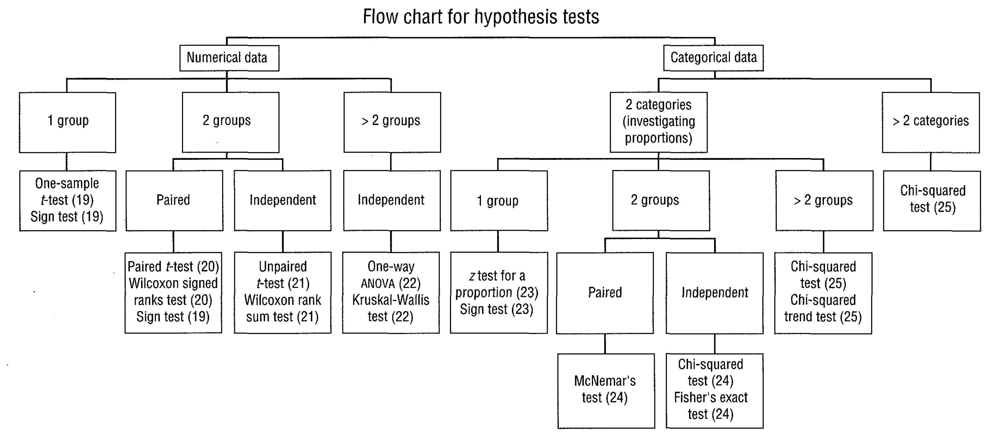
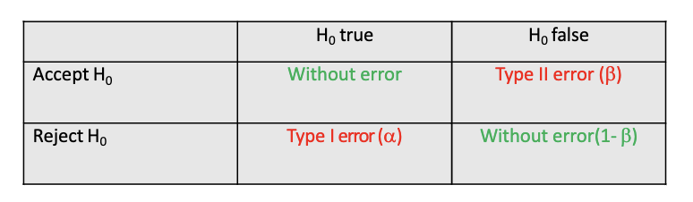
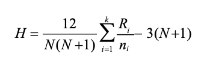

Lesson 4 - Hypothesis testing; Parametric tests; Nonparametric testing#
Topic: Hypothesis testing; Parametric tests; Nonparametric testing
Hypothesis testing#

Introduction#
With confidence intervals we can infer about a parameter in the population based on an estimate of that parameter.
Hypothesis tests are based on another different (but related) approach.
The idea now is to measure how much the results observed in the sample are compatible with a hypothesis about the population.
Define the hypothesis
H0 = null hypothesis - no effect on population
Set the significance level (alpha) - usually 0.05
Get the test statistic with the sample data and obtain the p-value: probability of obtaining the result we obtained or even more extreme, assuming H0 is true.
Interpret the p-value:
if p < alpha, we have enough evidence to reject H0
if p ≥ alpha, we do not have enough evidence to reject H0
Hypothesis test - error#

test power = 1 – beta = probability of rejecting H0 when false, that is, the ability of the test to detect differences when they exist.
a (alfa) is defined by us when we set the level of significance
To have a higher test power (1-β) we need:
larger sample size
smaller variability of observations
higher effect
higher a
Parametric tests#
One Sample T-test#
With a sample of individuals we want to know if the average of their population is a certain value.
Define the hypothesis and significance level (alpha)
H0: Population mean equal to ( \mu_1 )
H1: Population mean is different than ( \mu_1 )
Get the test statistic with the sample data
( t = \frac{\bar{X} - \mu_1}{\frac{s}{\sqrt{n}}} )
which follows a t-distribution with n-1 degrees of freedom
Paired Sample T-test#
With two paired samples of individuals, we want to know if the means of the two groups in the population are equal.
We define the Hypothesis
H0: ( \mu_1 = \mu_2 ) or ( \mu_1 - \mu_2 = 0 )
H1: ( \mu_1 \neq \mu_2 ) or ( \mu_1 - \mu_2 \neq 0 )
We set the significance level (alpha) - usually 0.05
We get the test statistic with the sample data ( t = \frac{\text{mean of differences}}{\text{standard error of the differences}} ) which follows a t-distribution with n-1 degrees of freedom
We get the p-value
We interpret the value of p
# Independent Sample T-test#
With two independent samples of individuals we want to know if the means of the two groups in the population are equal.
We define the hypothesis
H0: ( \mu_1 = \mu_2 ) or ( \mu_1 - \mu_2 = 0 )
H1: ( \mu_1 \neq \mu_2 ) or ( \mu_1 - \mu_2 \neq 0 )
We get the test statistic with the sample data ( t = \frac{(\bar{X}_1 - \bar{X}2) - (\mu_1 - \mu_2)}{s{p}\sqrt{\frac{1}{n_1} + \frac{1}{n_2}}} ), which follows a t-distribution with ( (n_1 + n_2 - 2) ) degrees of freedom
We set the significance level (alpha) - usually 0.05
We get the p-value
We interpret the value of p
And if the variances are not equal, how to calculate sp?
Levene’s test tests the hypothesis that the variances are equal in both groups. If they are not equal we cannot calculate the grouped estimate of standard deviations (sp) and we have to resort to a modified t-test.
One-Way ANOVA – more than 2 groups#
We define the null hypothesis: H0: μ1 = μ2 = … = μk We will have a set of i groups with ni individuals each, a total of N individuals, an average of each group xi and a common average X
Between groups variability
Between groups mean sum of squares (Between MS) ( \frac{\sum (\bar{X}_i - \bar{X})^2}{k - 1} )
Within groups variability
Within groups mean sum of squares (Within MS) Weighted mean of the groups variances
But beware: the variance has to be equal in all groups - Levene test.
It is proved that if ( \mu_1 = \mu_2 = \ldots = \mu_k ), then Between MS ( \sim ) Within MS
Otherwise, if ( \mu_1 \neq \mu_2 \neq \ldots \neq \mu_k ), Between MS will be higher than Within MS
So, to test H0: ( \mu_1 = \mu_2 = \ldots = \mu_k ), the F statistic is calculated
We set the significance level (alpha) - usually 0.05
We get the test statistic with the sample data ( F = \frac{\text{Between MS}}{\text{Within MS}} )
We get the p-value
We interpret the value of p
When differences are found, it is sometimes important to know which groups are different.
One solution is to make multiple comparisons (two by two), like this: H0: μ1 = μ2 H0: μ1 = μ3 H0: μ1 = μ4 H0: μ2 = μ3 H0: μ2 = μ4 H0: μ3 = μ4
So… why didn’t we do this from the beginning?
Suppose H0 true
We define the significance level P(type I error) = 0.05 for each test. We will have 6 tests to do. How likely are you to make at least one type I mistake? Is it 0.05?
The probability of making a type I error in at least one test is greater than 0.05! So after doing one way ANOVA and if we want to identify which groups are different we can make multiple comparisons but we have to correct the level of significance.
There are several fixes implemented in R: Bonferroni, Sheffe, Tukey, etc
Assumption of normality verification#
Graphical (histograms, etc…)
Kolmogorov-Smirnov test
The usefulness of the K-S test is limited.
It has very little power with a small sample, i.e. it easily accepts normality for lack of contrary information.
It is also very sensitive when the sample is large, i.e. a significant p value is obtained with small deviations from the normal distribution in the sample.
Nonparametric testing#
Paired samples - Sign test#
Sign test ignores much of the information as it only takes into account whether weight loss or weight gain has occurred.
Paired samples - Signed-rank Wilcoxon test#
TBD
Independent samples - Mann-Whitney Utest#
If the groups are not paired we can use Mann-Whitney U test
The values are sorted regardless of the group to which they belong. The sum of ranks, R1, is calculated for one of the groups
The following statistics are calculated
( U = n_A n_B + \frac{n_A (n_A + 1)}{2} - R_1 )
If ( U > \frac{n_A n_B}{2} ), we use the statistic ( U’ = n_A n_B - U )
Using a normal approximation, we obtain the p-value associated with the statistic.
More than two independent samples - Kruskal-Wallis test#
All values are arranged in ascending order so that each value has an assigned position.
The statistic is calculated  N = total number of individuals ni= total number of individuals in group i Ri = sum of positions in group I which follows a Chi-square distribution with k-1 degrees of freedom.